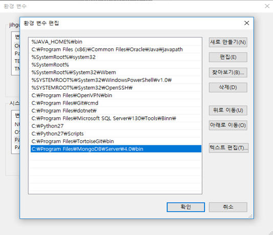

[Windows: MongoDB 설치]
MongoDB 홈페이지에서 Windows 용 MSI 파일을 받아서 설치 (Community Server)
설치 과정엔 특이사항이 없으니 Default로 진행
설치가 완료되면 아래 경로에서 mongod.exe 파일과 mongo.exe 파일 확인
- C:\Program Files\MongoDB\Server\4.0\bin
시스템 변수를 편집하여 위에서 확인한 경로를 추가

mongod.exe 파일로 서버를 띄우고 mongo.exe 파일로 접속하여 연결 상태 확인하면 끝
- 서버는 localhost:21017
- mongod 실행 시 옵션을 주면 커스텀 가능
- –dbpath 옵션으로 폴더 경로 지정 (ex. D:\mongodb\data)
- –logpath 옵션으로 로그 파일 지정 (ex. D:\mongodb\log\mongo.log)
[Windows Service 등록]
매번 .exe 파일이 있는 경로에서 실행하기 번거로우니까 윈도우 서비스로 등록하여 사용 가능
필히
관리자 권한으로 cmd 실행command에서 mongod 실행 시 –install 옵션 설정
1
$ mongod --install --serviceName MongoDB --serviceDisplayName MongoDB --dbpath "D:\\mongodb\\data" --logpath "D:\\mongodb\\log\\mongo.log" --port 21017
- 옵션을 지정하기 귀찮으면 .cfg 파일을 만들어서 사용하는 것도 가능
- –logappend 옵션으로 하나의 로그 파일에 계속 덧붙이기도 가능
services.msc 통해 MongoDB 서비스 확인 (command에서 설정한 serviceName)
설치하고 나면 아래 명령어로 간단하게 MongoDB Start/Stop 가능
1
2$ net start MongoDB
$ net stop MongoDB혹시 제거하고 싶다면 아래 명령 중 하나를 수행
1
2$ mongod --remove --serviceName MongoDB
$ sc.exe delete MongoDB
[MongoDB Windows GUI: Robo 3T 설치]
Robomongo 홈페이지에 접속해서 Robo 3T 다운로드
설치는 설치판/무설치판 모두 가능
MongoDB 실행 후 Robo 3T 실행하여 Connect
GUI로 DB 컨트롤 가능